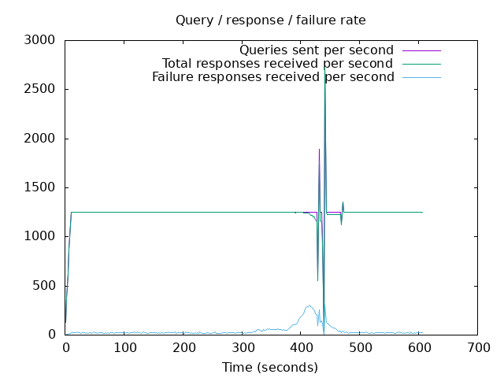
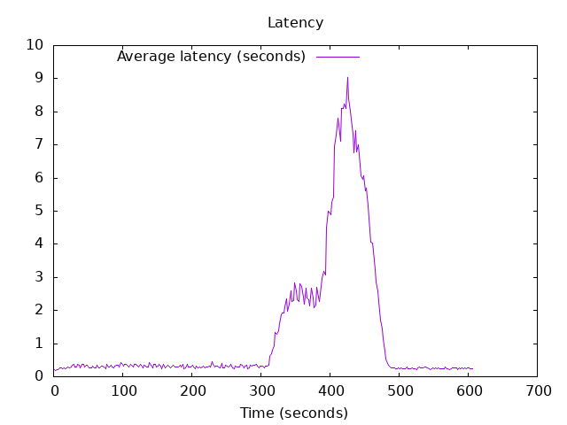

DNS Resolution Performance Testing Tool Version 2.14.0 [Status] Command line: resperf -P 20250620-1144.gnuplot -M doh -s 79.127.218.224 -O doh-uri=https://protective.joindns4.eu/dns-query -d domains_shuffled.list -C 50 -m 1250 -b 1400 -q 1000000 -R -r 10 -c 600 -t 30 -F 0 -i 2 [Status] Sending [Status] Ramp-up done, sending constant traffic Warning: received a response with an unexpected id: 9630 Warning: received a response with an unexpected id: 9616 Warning: received a response with an unexpected id: 9635 Warning: received a response with an unexpected id: 9632 Warning: received a response with an unexpected id: 9638 Warning: received a response with an unexpected id: 9630 Warning: received a response with an unexpected id: 9641 Warning: received a response with an unexpected id: 9650 Warning: received a response with an unexpected id: 9651 Warning: received a response with an unexpected id: 9613 Warning: received a response with an unexpected id: 9631 Warning: received a response with an unexpected id: 9617 Warning: received a response with an unexpected id: 9656 Warning: received a response with an unexpected id: 9680 Warning: received a response with an unexpected id: 9874 Warning: received a response with an unexpected id: 9880 Warning: received a response with an unexpected id: 10011 Warning: received a response with an unexpected id: 10013 Warning: received a response with an unexpected id: 10018 Warning: received a response with an unexpected id: 10028 Warning: received a response with an unexpected id: 10017 Warning: received a response with an unexpected id: 10031 Warning: received a response with an unexpected id: 10014 Warning: received a response with an unexpected id: 10019 Warning: received a response with an unexpected id: 10009 Warning: received a response with an unexpected id: 10035 Warning: received a response with an unexpected id: 10008 Warning: received a response with an unexpected id: 10021 Warning: received a response with an unexpected id: 10038 Warning: nghttp2_session_send failed: The user callback function failed Warning: nghttp2_session_send failed: The user callback function failed Warning: received a response with an unexpected id: 10274 Warning: received a response with an unexpected id: 10287 [Status] Waiting for more responses [Status] Testing complete Statistics: Queries sent: 756249 Queries completed: 753973 Queries lost: 2276 Response codes: NOERROR 499895 (66.30%), SERVFAIL 27109 (3.60%), NXDOMAIN 226969 (30.10%) Run time (s): 621.142494 Maximum throughput: 2726.500000 qps Lost at that point: 0.42% Connection attempts: 71 (71 successful, 100.00%) DNS-over-HTTPS statistics: HTTP/2 return codes: 200: 754004
 